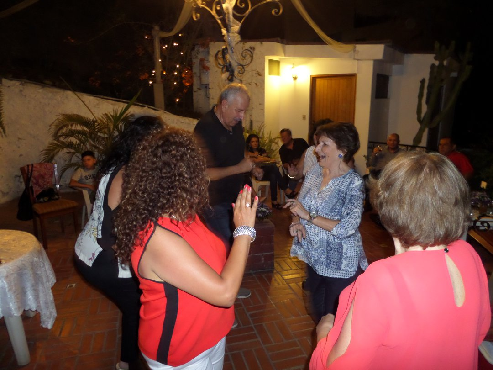
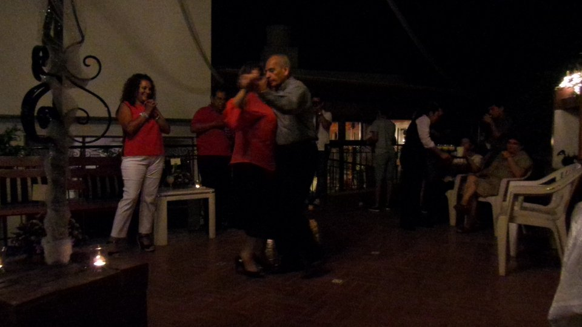
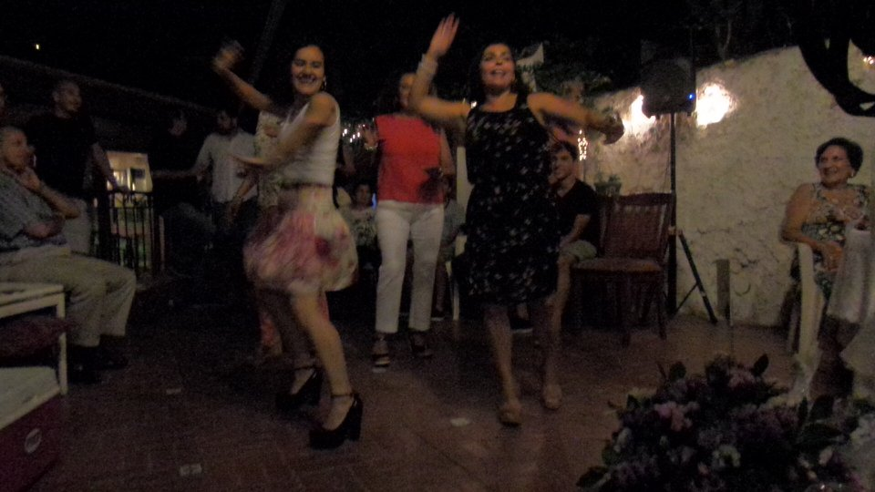
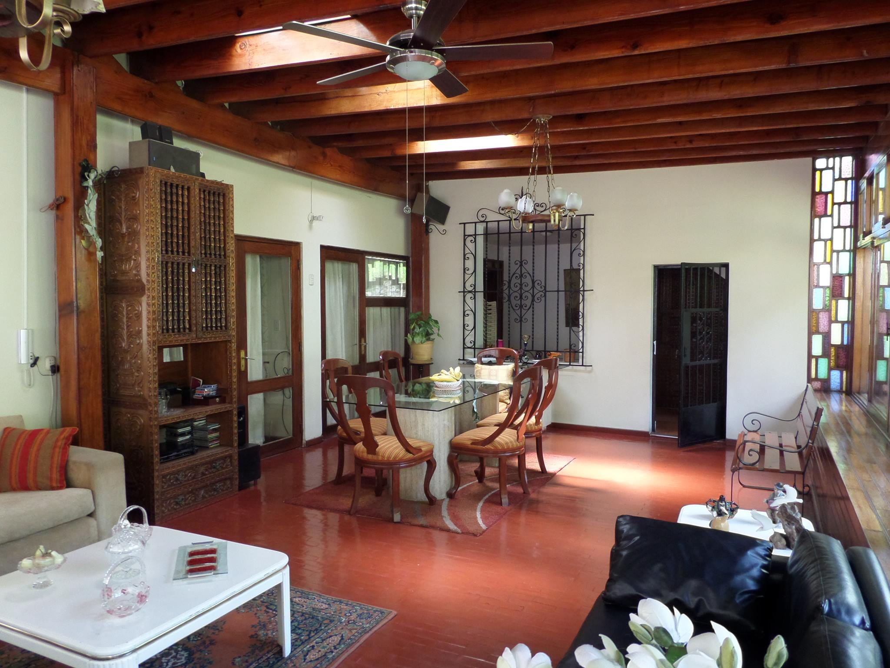
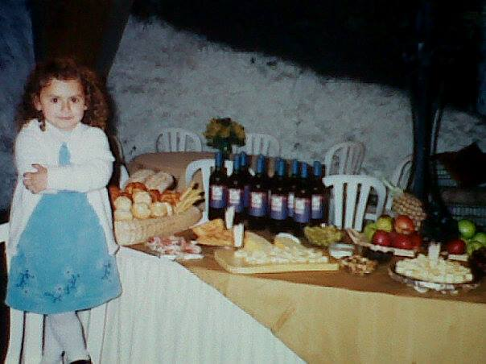
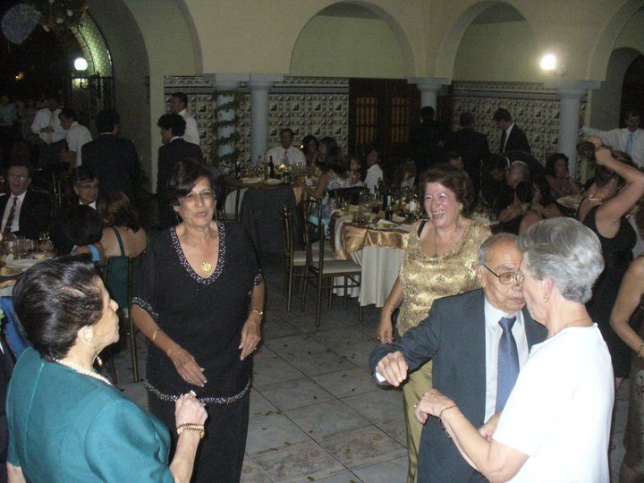
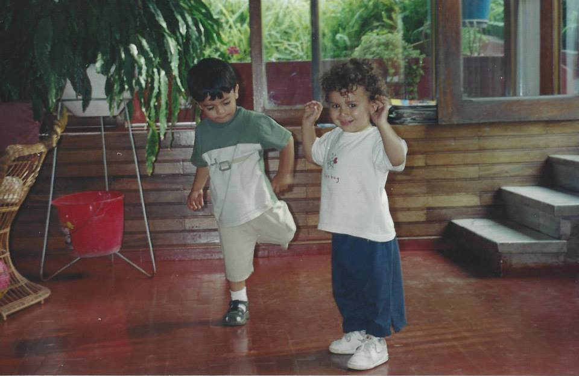
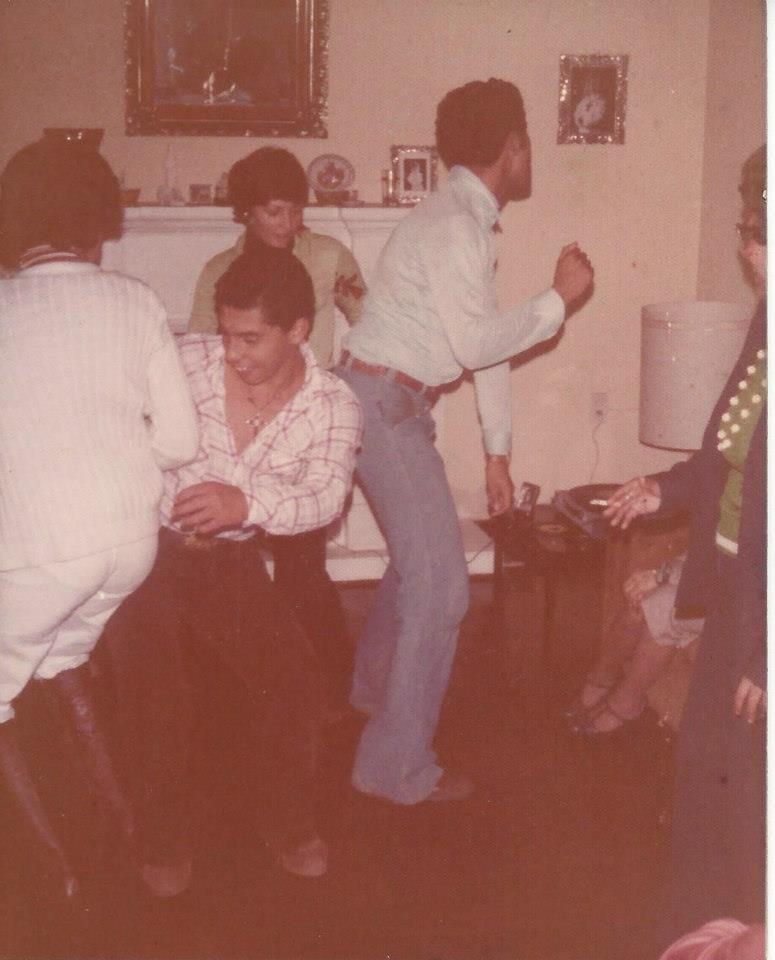

  
bodas de diamante


Y a ti ¿Qué recuerdos te trae? ¿Qué sensaciones te despierta? Cuéntanos, queremos
saber. - mi tío, Ricardo
- Temporadas de Rosario atendidos por una encantadora familia!!!
- A mi me trae bellos recuerdos compartidos con la familia, bailes, risas, y conversaciones por horas. Mis tios Raul y Lidia muy buenos anfritiones.
- Me hacían hacer tareas atrás de las rejas
- Navidades con toda la familia, fiestas, alegria, celebracion, y muchas sonrisas
- cuando veo esta foto, me trae a la memoria las reuniones de los sábados con mi abuelita Lidia, la tia Gloria, las tias Garreta... mis hijos aprendiendo a gatear, son muchos los recuerdos que uno lleva en la memoria y en el corazón...
- sentimientos encontrados
- Temporadas de Rosario atendidos por una encantadora familia!!!
- A mi me trae bellos recuerdos compartidos con la familia, bailes, risas, y conversaciones por horas. Mis tios Raul y Lidia muy buenos anfritiones.
- Me hacían hacer tareas atrás de las rejas
- Navidades con toda la familia, fiestas, alegria, celebracion, y muchas sonrisas
- cuando veo esta foto, me trae a la memoria las reuniones de los sábados con mi abuelita Lidia, la tia Gloria, las tias Garreta... mis hijos aprendiendo a gatear, son muchos los recuerdos que uno lleva en la memoria y en el corazón...
- sentimientos encontrados

Sofia preparando la fiesta de mi cumpleaños - Mi mama, Ursula


bodas de oro

compitiendo - mi tío, Ricardo
mi primo y yo
mi primo y yo


Así bailábamos en los 70', mi - mi tío, Ricardo